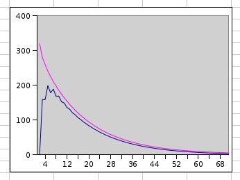
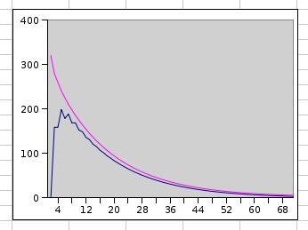
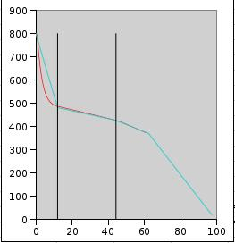

| A | AFAP cooling to annealing soak is "instant" | The kiln is cooled AFAP from an uniform working temperature, the glass sheet preserving that temperature everywhere. If not, the process begins earlier and real life soak time is shorter. |
| B | The sheet is large | meaning that cooling from edges can be ignored. If not, cooling from several directions maybe faster. For thick 3D glass pieces this is important. |
| C | The air temperature is next to the sheet |
Assumption that the displayed kiln temperature equals the air temperature at the glass surface. The convection current is assumed to remove a hot laminar layer. The air temperature in the model can be adjusted if better information is available |
| D | The glass is cooled from both sides | This is a major assumption. For thin glass cooling the shelf plays a major role. With thick glass the relative effect of the shelf is smaller. |
| E | BE 3" schedule is fairly accurate | The simulation method gives only relative values. The 3" first ramp time is used to scale the results into real world |
 Table 1
The first row is the initial state of annealing soak.
The next row is after one time unit, when all values are
re-calculated as an average of the neighbours on the row above.
This you see if you look
at the blue values that are the average of the red values on the previous row.
The same procedure is followedin the rows below. Onlu first 5 rows are displayed.
The same we can show as a graph
Table 1
The first row is the initial state of annealing soak.
The next row is after one time unit, when all values are
re-calculated as an average of the neighbours on the row above.
This you see if you look
at the blue values that are the average of the red values on the previous row.
The same procedure is followedin the rows below. Onlu first 5 rows are displayed.
The same we can show as a graph
 Fig 2.Temperature gradient during soak
The temperatue profiles through the sheet are displayed at 10 time unit intervals.
We can also have another view.
 Fig 3. temperature drop during anneal soak
The upper pink curve is the total heat load over time.
The blue curve is the temperature difference of core and surface.
The soak is complete when this value has dropped to 5C or less.
Fig 2.Temperature gradient during soak
The temperatue profiles through the sheet are displayed at 10 time unit intervals.
We can also have another view.
 Fig 3. temperature drop during anneal soak
The upper pink curve is the total heat load over time.
The blue curve is the temperature difference of core and surface.
The soak is complete when this value has dropped to 5C or less.
|  Fig 5 75 mm comparison. |
The time line base is selected so that the lines cross at the begin of first ramp..
| From | To | ratio |
| 1" | 2" | 3.83 |
| 1 1/2" | 3" | 3.82 |
| 2" | 4" | 3.78 |